Contents
close all
clear
clc
Problem 1
M = []; % M will be our matrix of x(k) where each column corresponds to a different p value kmax = 700; init = 0.5; probs = 0:0.02:4; for p = 0:0.02:4 res = compute_logistic_map(p, init, kmax); % compute the column vector M = [M, res]; % Append resulting column vector to matrix end M_slice = M(end-100:end,:); % the last 100 or so rows of M figure; plot(probs,M_slice,'.'); title('Bifurcation Diagram'); % From approximately 0 <= p < 1, the system converges to 0 % From approximately 1 <= p < 3, the system has a single amplitude that varies with p % From approximately 3 <= p < 3.57, the system displays period doubling % From approximately 3.57 <= p < 4, the system exhibits chaos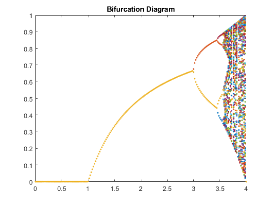
Problem 2
a) Plotting four representative sequences with initial condition 0.5 When equilibria converge to 0 (initial condition is 0.5)
p = 0.3; kmax = 700; init = 0.5; sequence = compute_logistic_map(p, init, kmax); sequence_slice = sequence(end-100:end,:); % the last 100 or so rows of sequence figure; plot(p,sequence_slice,'o') title('Region 1: Zero Amplitude') % Single Amplitude (initial condition is 0.5) p = 2; kmax = 700; init = 0.5; sequence = compute_logistic_map(p, init, kmax); sequence_slice = sequence(end-100:end,:); % the last 100 or so rows of sequence figure; plot(p,sequence_slice,'o') title('Region 2: Single Amplitude') % Period Doubling (initial condition is 0.5) p = 3.25; kmax = 700; init = 0.5; sequence = compute_logistic_map(p, init, kmax); sequence_slice = sequence(end-100:end,:); % the last 100 or so rows of sequence figure; plot(p,sequence_slice,'o') title('Region 3: Period Doubling Starts (Two Amplitudes)') % Four Amplitudes (initial condition is 0.5) p = 3.5; kmax = 700; init = 0.5; sequence = compute_logistic_map(p, init, kmax); sequence_slice = sequence(end-100:end,:); % the last 100 or so rows of sequence figure; plot(p,sequence_slice,'o') title('Region 4: Four Amplitudes') % Chaos (initial condition is 0.5) p = 3.9; kmax = 700; init = 0.5; sequence = compute_logistic_map(p, init, kmax); sequence_slice = sequence(end-100:end,:); % the last 100 or so rows of sequence figure; plot(p,sequence_slice,'o') title('Region 5: Chaos') % p > 4 (initial condition is 0.5) Diverges p = 4.3; kmax = 700; init = 0.5; sequence = compute_logistic_map(p, init, kmax); sequence_slice = sequence(end-100:end,:); % the last 100 or so rows of sequence % Sequence_slice is all negative infinity figure; plot(p,sequence_slice,'o') title('Region 6: Equilibria diverge') % b) Now we try with initial condition 1.5 % When equilibria converge to 0 (initial condition is 1.5) p = 0.3; kmax = 700; init = 1.5; sequence = compute_logistic_map(p, init, kmax); sequence_slice = sequence(end-100:end,:); % the last 100 or so rows of sequence figure; plot(p,sequence_slice,'o') title('Region 1: Zero Amplitude') % Single Amplitude (initial condition is 1.5) p = 2; kmax = 700; init = 1.5; sequence = compute_logistic_map(p, init, kmax); sequence_slice = sequence(end-100:end,:); % the last 100 or so rows of sequence figure; plot(p,sequence_slice,'o') title('Region 2: Diverges') % For initial condition 1.5, anything that does not converge to 0 blows up % to infinity % % Period Doubling (initial condition is 1.5) p = 3.25; kmax = 700; init = 1.5; sequence = compute_logistic_map(p, init, kmax); sequence_slice = sequence(end-100:end,:); % the last 100 or so rows of sequence figure; plot(p,sequence_slice,'o') title('Region 3: Diverges') % For initial condition 1.5, anything that does not converge to 0 blows up % to infinity % Four Amplitudes (initial condition is 1.5) p = 3.5; kmax = 700; init = 1.5; sequence = compute_logistic_map(p, init, kmax); sequence_slice = sequence(end-100:end,:); % the last 100 or so rows of sequence figure; plot(p,sequence_slice,'o') title('Region 4: Diverges') % For initial condition 1.5, anything that does not converge to 0 blows up % to infinity % Chaos (initial condition is 1.5) p = 3.9; kmax = 700; init = 1.5; sequence = compute_logistic_map(p, init, kmax); sequence_slice = sequence(end-100:end,:); % the last 100 or so rows of sequence figure; plot(p,sequence_slice,'o') title('Region 5: Chaos (Diverges)') % For initial condition 1.5, this region diverges % p > 4 (initial condition is 1.5) Diverges p = 4.3; kmax = 700; init = 1.5; sequence = compute_logistic_map(p, init, kmax); sequence_slice = sequence(end-100:end,:); % the last 100 or so rows of sequence % Sequence_slice is all negative infinity as before figure; plot(p,sequence_slice,'o') title('Region 6 (p = 4.3): Equilibria diverge')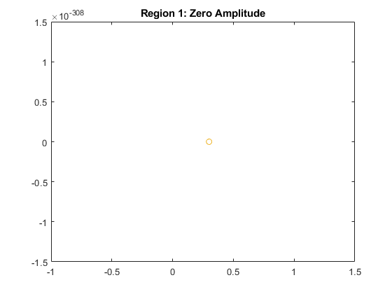 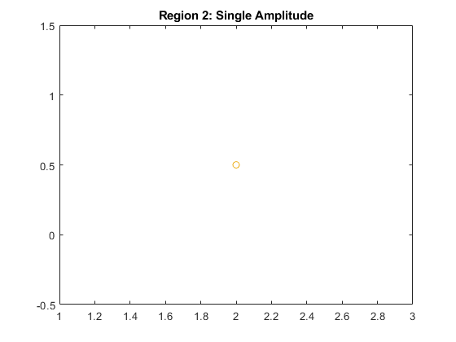 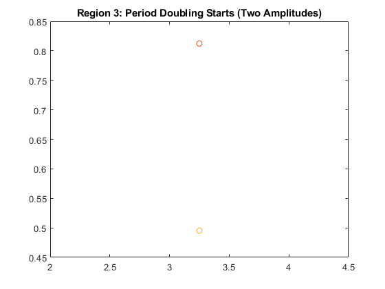 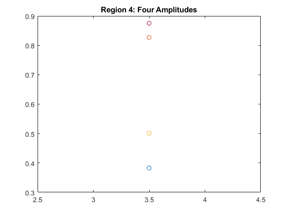 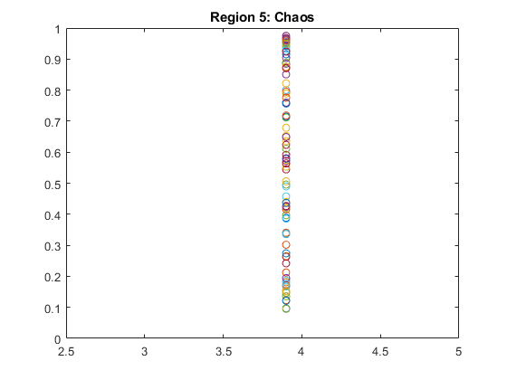 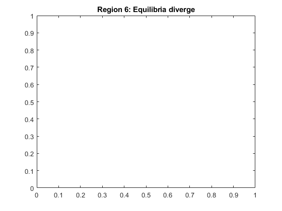 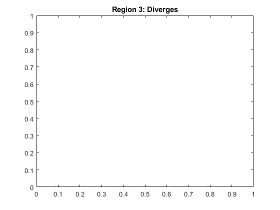
 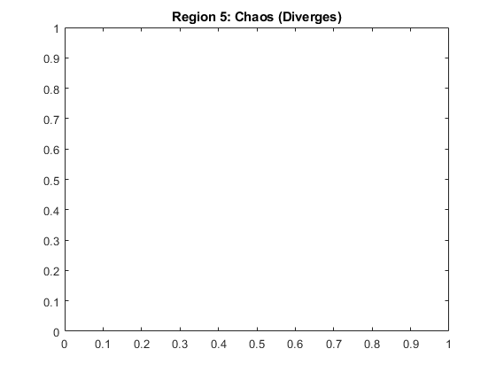 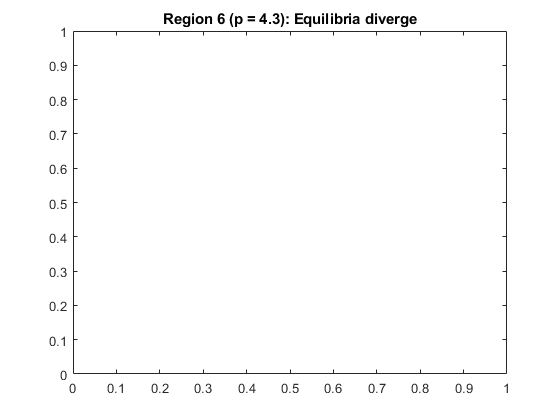
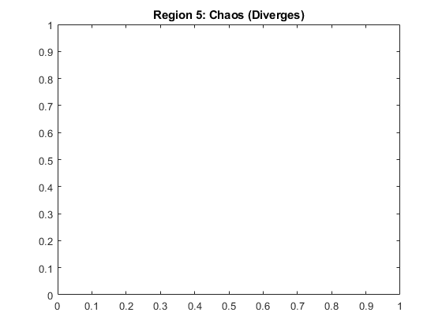 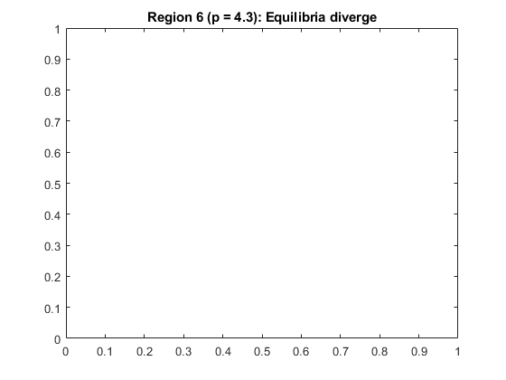 Problem 3
M = []; kmax = 5000; init = 0.5; probs = 3:0.0001:3.5697; for p = 3:0.0001:3.5697 res = compute_logistic_map(p, init, kmax); M = [M, res]; end M_slice = M(end-100:end,:); % the last 100 or so rows of M figure; plot(probs,M_slice,'.'); title('Bifurcation Diagram (Greater Resolution): Period Doubling Region'); [row_num_M,col_num_M] = size(M_slice); Ts = []; deltas = []; for i=1:col_num_M [T,delta] = compute_delta(M_slice(:,i)); Ts = [Ts, T]; end figure plot(probs,Ts) title('T vs p') periods = [2, 4, 8, 16, 32]; ws = []; for i=[2,4,8,16,32] indices = find(Ts==i); min_index = min(indices); max_index = max(indices); p_min = probs(min_index); p_max = probs(max_index); w = p_max-p_min; ws = [ws w]; fprintf('T = %.4f \t p_min = %.4f \t p_max = %.4f \t w = %.4f\n', i, p_min, p_max, w) end F = []; for i = 1:length(ws)-1 ratio = ws(i)/ws(i+1); F = [F ratio]; end % List of ratios: F1, F2, F3, and F4 disp(F); % All ratios are between 4.6 and 4.8, and converging to about 4.7 or so. We % know that the actual Feigenbaum constant is 4.669 so this checks out.
T = 2.0000 p_min = 3.0000 p_max = 3.4491 w = 0.4491
T = 4.0000 p_min = 3.4492 p_max = 3.5439 w = 0.0947
T = 8.0000 p_min = 3.5440 p_max = 3.5643 w = 0.0203
T = 16.0000 p_min = 3.5644 p_max = 3.5687 w = 0.0043
T = 32.0000 p_min = 3.5688 p_max = 3.5697 w = 0.0009
4.7423 4.6650 4.7209 4.7778
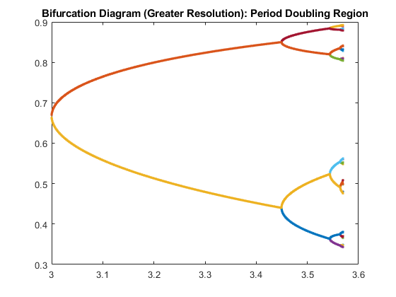 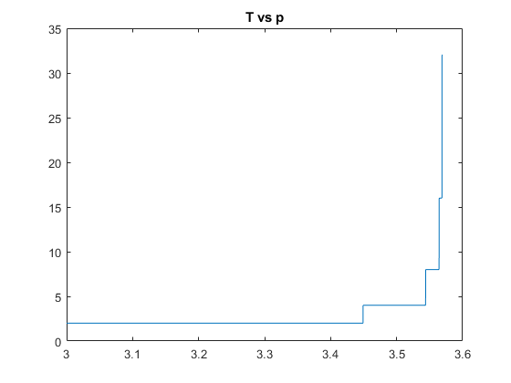 Problem 4
kmax = 500; init = 0.5; for p = 3.82839:0.00001:3.82843 res = compute_logistic_map(p, init, kmax); figure plot(res) title(sprintf('X(k) vs k at p=%f',p)) end % At around 3.82841, we find a brief "disruption"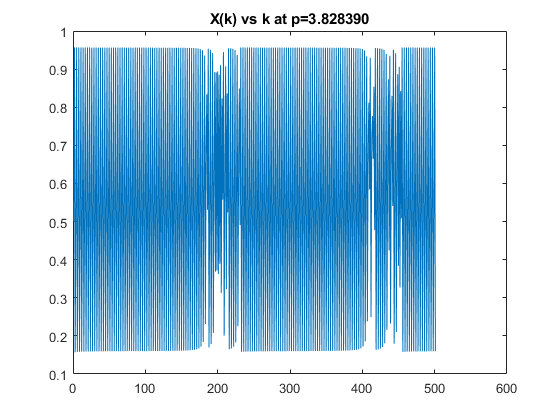 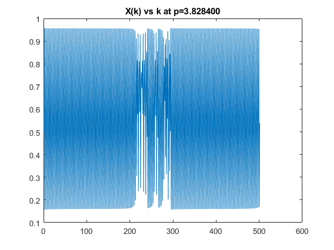 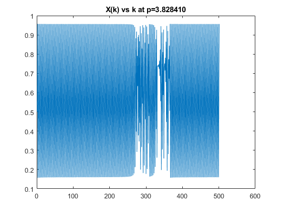 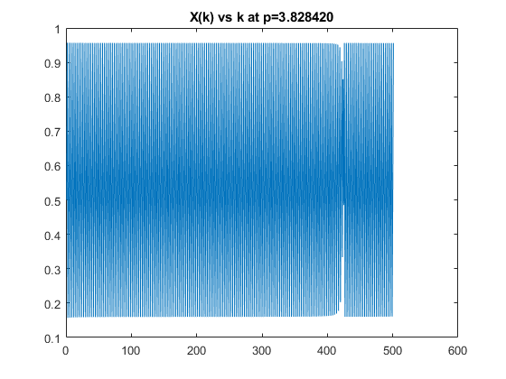 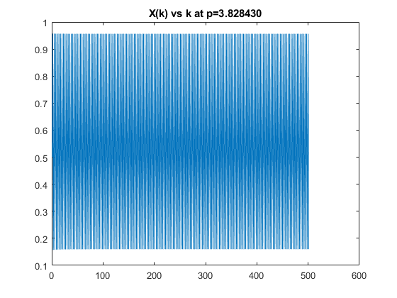
Problem 5
kmax = 500; init1 = 0.5; init2 = 0.5 + 10e-8; p = 3.95; res1 = compute_logistic_map(p, init1, kmax); res2 = compute_logistic_map(p, init2, kmax); final_res = res2 - res1; figure; plot(final_res) title('Difference in x(k) vs k for initial conditions differing by 10e-8') % At around k = 42, the two solutions become visibly distinct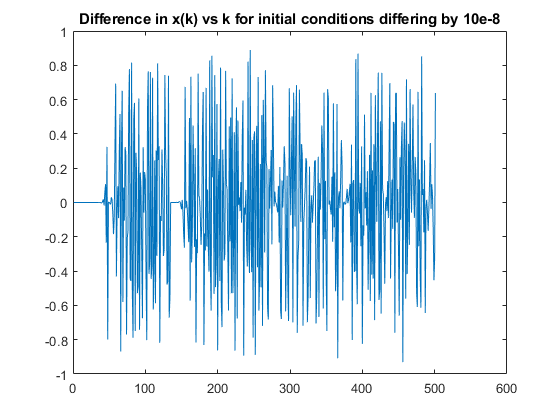